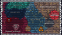
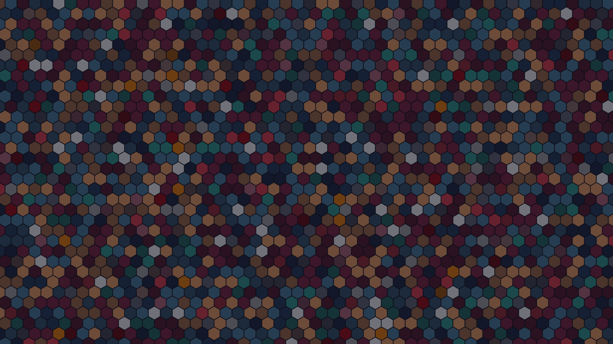
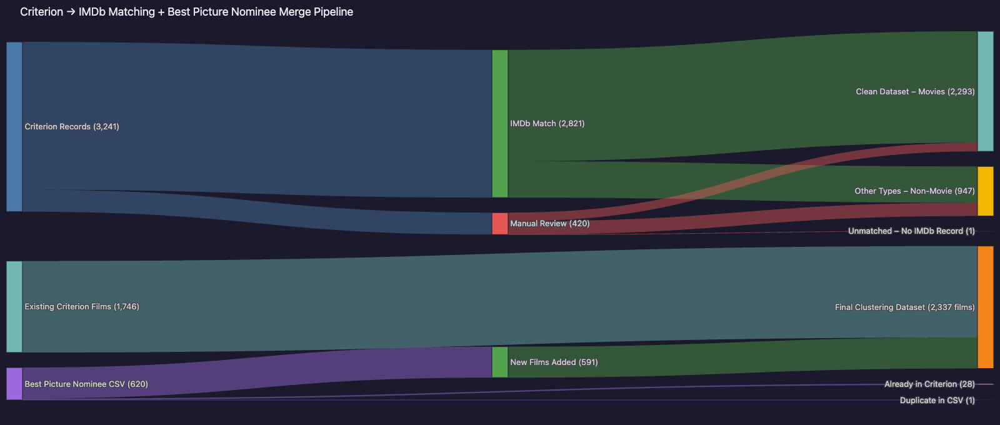

01 — Context
Criterion Over Time
The movements, studios, and eras behind the clusters — how each one fits into the broader story of film.
Read the history →
02 — Interactive
Explore the Clusters
Every film in the Collection -- Criterion titles plus the 2026 Academy Best Picture nominee import -- grouped into 12 hexagonal clusters by shared cast. Hover a region to preview it, click to explore that cluster's network.
Open the map →
03 — Personalized
Find Your Film
Not sure what to watch? Tell us what you're in the mood for, and we'll search the collection for films that match your taste.
Meet your next favorite film →04 — Directors
Explore Directors by Cluster
Every director in the collection, grouped by the cluster their films belong to.
Explore by director →
05 — The Data
Methodology
How the clusters were built: cast-overlap graphs, community detection, and the judgment calls behind them.
Read the methodology →